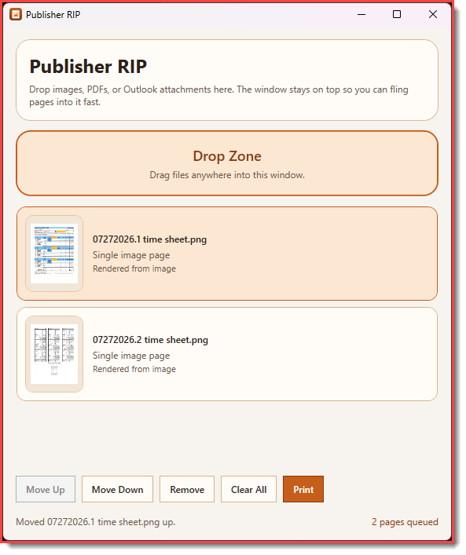

project
Publisher RIP
Drag-and-drop images, PDFs, and Outlook attachments — print them full-page, in order.
Microsoft Publisher is being discontinued. That was genuinely sad for a moment — until the realization that it was only still being used for one thing: taking a pile of images or PDFs and printing them full-page, in a specific order. Switching to a whole new publishing suite for that felt absurd. So Publisher RIP exists instead.
It’s a small always-on-top Windows window built for quick drag-and-drop. Drop in images, PDFs, or Outlook attachments, keep them in order, and send them through the normal Windows print dialog. Paper size, orientation, and printer choice stay where they belong — in the system dialog you already know.
Pages are scaled to fit the printer’s printable area while preserving aspect ratio. No layout chrome, no templates, no learning curve. Just the one job Publisher was still doing, without the rest of Publisher.

Drag and drop
Drop images, PDFs, or Outlook attachments straight onto the window. Built for the quick pass from folder or inbox to printer.
Print in order
Pages go out full-page and in the order you lined them up — no collage layout, no surprise reordering.
System print dialog
Paper size, orientation, and printer selection come from the normal Windows print dialog. No reinvented settings UI.
Fit to page
Images and PDF pages scale to the printable area while keeping aspect ratio, so nothing gets cropped or stretched oddly.
Always on top
Stays in a small always-on-top window so it’s ready whenever you need to drop the next batch of files.
Outlook attachments
Pulls attachments straight from Outlook drops, so you don’t have to save everything out to disk first.
Open PowerShell and run the one-liner below. The installer downloads the latest source, builds the app into %LOCALAPPDATA%\PublisherRip, and offers Desktop, Start Menu, and publisherrip launcher shortcuts.
irm https://raw.githubusercontent.com/KiwiGeek/PublisherRIP/master/scripts/install.ps1 | iex
Full install notes
Requirements, shortcut options, and how to launch if you skipped every installer prompt are covered in the README.
Windows only. Requires the .NET 10 SDK to build during install.